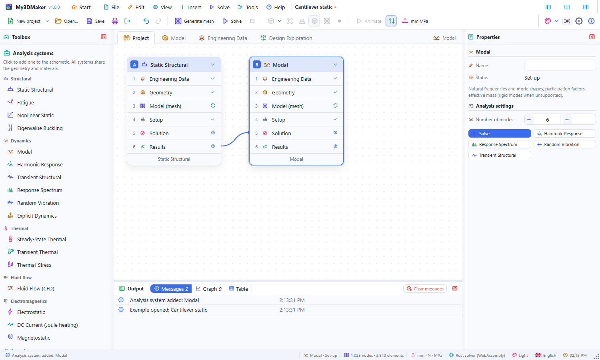
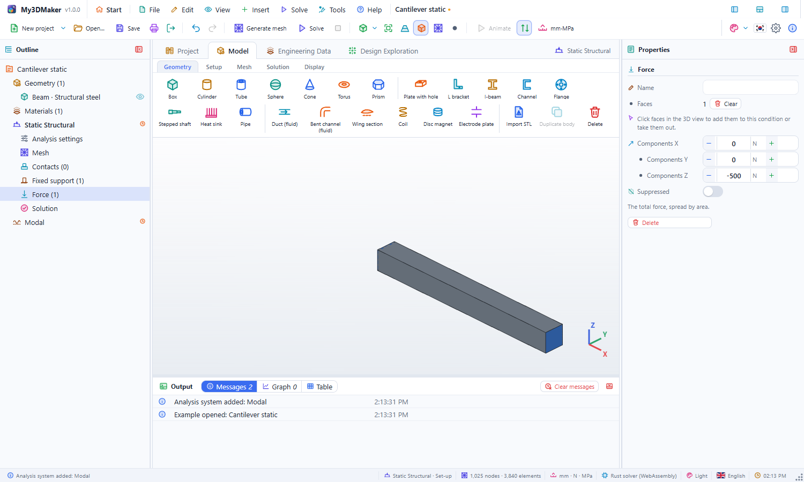
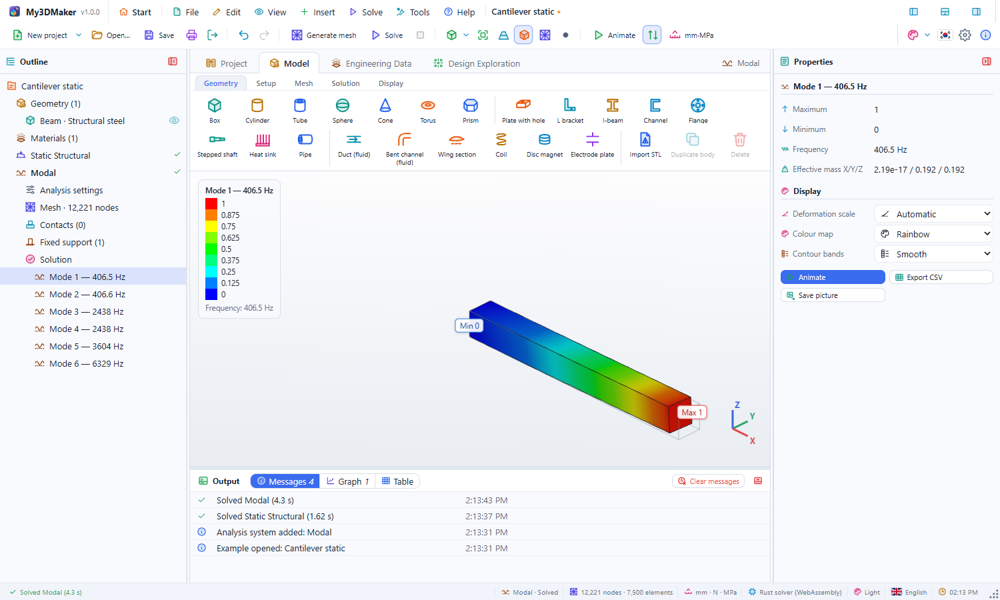
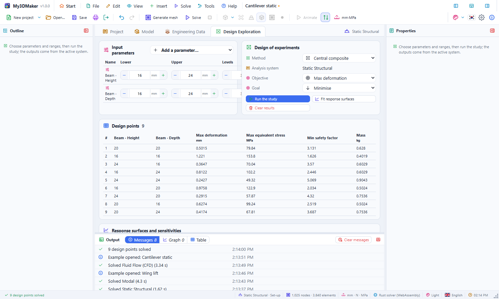

My3DMaker Tutorial — Stress and vibration of a bracket
Starting from an empty project, this tutorial finds the static stress of an L bracket, then its natural frequencies with the same model, then compares designs by varying its thickness. It takes about fifteen minutes.
1. Project and analysis system
- On the start page click New analysis system › Static Structural. A new project with a static structural system opens on the Project tab.
- Follow the block's cells from top to bottom: Engineering Data → Geometry → Model → Setup → Solution → Results.

2. Geometry
- Click the Geometry cell: the Model tab opens.
- Click Geometry › L bracket in the ribbon.
- In the Properties panel on the right, under Dimensions, set width 80, height 80, thickness 8, depth 40, hole diameter 12 (with − / + or by typing).
- Set Material to Aluminium alloy.
3. Support and load
- Click Setup › Fixed support in the ribbon.
- In the 3D view click the back face of the upright leg (the large face towards −X). It turns deep blue and the outline shows Fixed support (1). Click a wrong face again to take it out.
- Add a Force and click the end face of the horizontal leg (the small face towards +X).
- Set Components Z to −800 N.

4. Mesh and solve
- Choose Mesh in the outline: element size 4 mm, order Quadratic (TET10).
- Generate mesh shows it; the statistics give the node and element counts and the quality histogram.
- Click Solve (F5). After a few seconds the results appear under Solution.
5. Results
- Choose Equivalent stress (von Mises). The peak is in the inside corner where the legs meet.
- With Deformation scale on automatic the deformed shape is exaggerated, drawn with the undeformed outline.
- Safety factor shows the margin to yield; below 1 the material yields.
- In the bottom panel's Table, check that the fixed support's reaction is 800 N.

6. Vibration with the same model
- Back on the Project tab, choose ▾ › Add linked Modal on the static block. A modal system with the same supports appears to its right.
- Click its Solution cell to solve it.
- Choose Mode 1 and click Animate. The Table lists each mode's frequency and effective mass.

7. Design exploration
- Make the static system active and open the Design Exploration tab.
- Add a parameter…: the bracket's thickness and depth; the range is ±20 % of the current value.
- Objective Max equivalent stress, goal Minimise.
- Run the study: nine design points are solved, then the response surfaces, sensitivities and the optimum candidate show.

8. Report
File › Print report (Ctrl+P) previews an A4 report with the current result picture and colour scale, the result summary, the model, the conditions and a chart, to print or save as PDF. Export › Report (HTML) saves the same as a web page.
Next
- Open examples of the other physics: heat sink, flow around a wing, solenoid coil, duct acoustics, topology optimisation.
- The user's guide (F1) lists every condition and result.